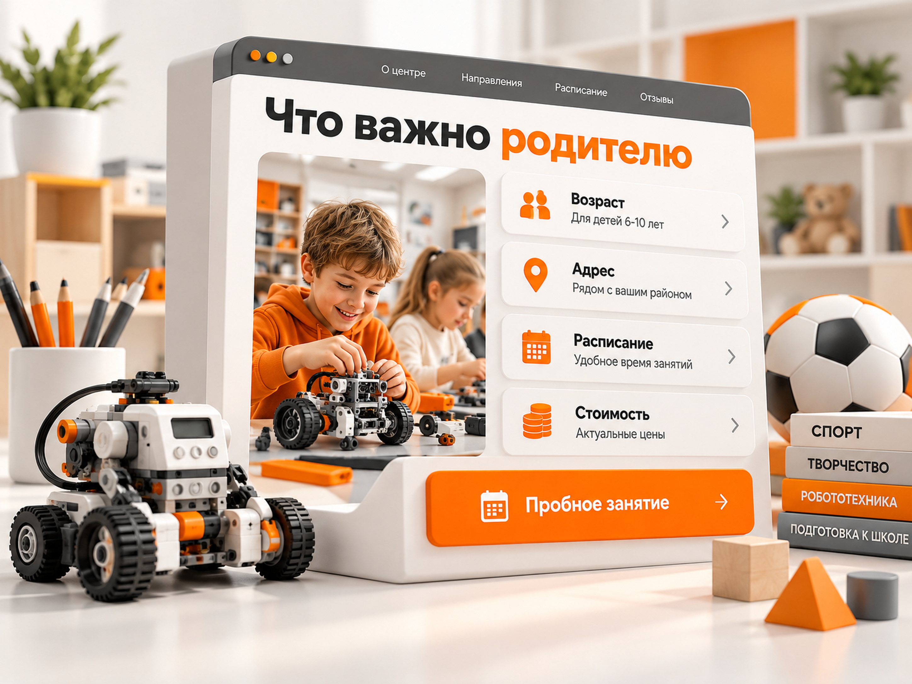
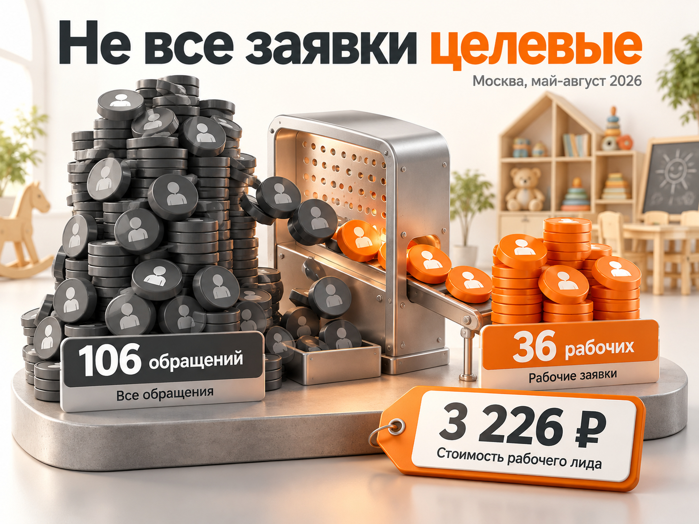

Блог о платном трафике
Продвижение детских центров, кружков и секций через Яндекс Директ
Продвижение детского центра лучше строить вокруг конкретных занятий, возраста ребёнка и расположения филиала. Для привлечения родителей я бы в первую очередь использовал Яндекс Директ на Поиске, Яндекс Карты и, при достаточном бюджете, РСЯ. Основное предложение в рекламе - запись на пробное занятие.
Рекламировать весь центр одним универсальным объявлением обычно менее эффективно, чем отдельно продвигать робототехнику, танцы, гимнастику или подготовку к школе. Родителю важно сразу увидеть подходящую программу, возрастную группу, адрес, расписание и стоимость.
Для предварительного медиаплана можно использовать несколько сценариев стоимости заявки, но универсальной цены для этой ниши нет. В опубликованных в 2026 году кейсах встречаются существенно разные результаты. Главный показатель эффективности - не стоимость обращения, а стоимость нового ученика, оплатившего занятия.
Как устроена воронка детского центра
Реклама детского центра должна приводить не просто к заявкам, а к покупке абонементов. Между первым обращением родителя и оплатой обычно проходит несколько этапов:
- Родитель видит рекламу и оставляет заявку.
- Администратор связывается с ним и уточняет возраст ребёнка, интересующее направление и удобное время.
- Родитель записывает ребёнка на пробное занятие.
- Ребёнок приходит и знакомится с преподавателем или тренером.
- Семья принимает решение о покупке абонемента.
Иногда между заявкой и пробным занятием появляется дополнительный этап: консультация, диагностика или подбор подходящей группы.
Поэтому отдельно нужно считать стоимость заявки, квалифицированного обращения, состоявшегося пробного занятия и нового платящего ученика.
Например, одна кампания может приводить заявки по 800 ₽, но половина родителей не отвечает на звонки. Другая получает обращения по 1300 ₽, зато большая часть детей приходит на пробное занятие и покупает абонемент.
Дешёвая заявка не обязательно означает дешёвого ученика.
Спрос и сезонность продвижения детских центров
Для детских кружков и секций характерна сезонность. Особенно важен период подготовки к новому учебному году, когда родители выбирают дополнительные занятия для детей.
Поэтому основной осенний набор желательно рекламировать заранее, в июле-августе. Это позволяет протестировать объявления, проверить поисковые запросы, оценить стоимость обращений и подготовить посадочные страницы до начала сентября.
Не стоит рассчитывать, что автоматическая стратегия стабилизируется сразу после запуска. По рекомендациям Яндекса на первоначальное обучение может потребоваться одна-две недели, а при небольшом количестве конверсий и больше.
После завершения основного набора рекламу можно переключить на:
- добор детей в незаполненные группы;
- новые направления;
- пробные занятия;
- каникульные программы и интенсивы;
- январский набор после праздников.
При этом у разных направлений сезонность может отличаться. Спрос на подготовку к школе, спортивную секцию и летний творческий интенсив не обязательно достигает максимума одновременно.
Для конкретного центра сезонность лучше проверять по Яндекс Вордстату, собственной CRM и статистике прошлых лет.
Что рекламировать: детский центр или отдельные направления
Если центр предлагает десять направлений, не нужно отправлять всех посетителей на одну страницу с общим каталогом занятий.
Человек, который ищет робототехнику, должен попадать на страницу робототехники. Родитель, которому нужна гимнастика для ребёнка пяти лет, должен сразу увидеть подходящую возрастную группу, преподавателя и расписание.
При подготовке рекламы я бы разделил направления по трём параметрам:
- Вид занятия: спорт, творчество, робототехника, подготовка к школе.
- Возраст: дошкольники, младшие школьники, подростки.
- География: филиал, район, станция метро, ближайшие жилые комплексы.
Не обязательно создавать отдельную рекламную кампанию для каждой комбинации. Но смысл объявлений и посадочных страниц должен соответствовать конкретному запросу.
Особенно важно различать общие запросы вроде «детский развивающий центр рядом» и более конкретные, например «робототехника для детей 7 лет САО».
У этих запросов разные ожидания, поэтому одинаковые объявления не всегда будут одинаково эффективными.
Какой оффер использовать в рекламе детских кружков
Для детских центров основным предложением я бы сделал запись на пробное занятие, а не попытку сразу продать месячный или годовой абонемент.
Родители хотят познакомиться с преподавателем, посмотреть помещение и убедиться, что ребёнку действительно интересно.
Пробное занятие может быть бесплатным или платным. Сам факт бесплатности не гарантирует более качественные обращения. Иногда символическая плата помогает снизить число записей без последующего посещения.
В зависимости от направления первым шагом могут быть:
- пробная тренировка;
- открытый урок;
- мастер-класс;
- диагностика;
- знакомство с преподавателем;
- тестирование уровня подготовки.
Сильный рекламный оффер содержит конкретику. Например, вместо абстрактного «Развиваем детей с раннего возраста» лучше использовать предложение по конкретному направлению, возрасту и местоположению.
Само объявление должно отвечать на вопросы: кому подходит занятие, где оно проходит и что нужно сделать для записи.
Каким должен быть сайт детского центра для Яндекс Директа
Посадочная страница детского центра должна позволять родителю быстро оценить занятие и записать ребёнка без поиска информации по всему сайту.
На первом экране желательно показать:
- название конкретного направления;
- возраст детей;
- адрес, район или метро;
- ближайшее расписание;
- стоимость занятия или абонемента;
- кнопку записи на пробный урок.

Ниже нужны программа, фотографии реальных занятий, информация о преподавателях, отзывы, условия пробного урока и ответы на вопросы родителей.
Для многопрофильного центра предпочтительнее создать отдельные страницы направлений. Если бюджет разработки ограничен, можно начать с полноценных разделов с прямыми ссылками из рекламы.
Почему сайт влияет на стоимость заявки
В кейсе школы танцев, опубликованном eLama в 2026 году, после переработки сайта конверсия из рекламного трафика выросла с 3,6% до 9,42%, а стоимость заявки снизилась с 1992 до 1324 ₽.
В проекте переработали мобильную версию, формы записи и представление информации. Дополнительно использовали рекламу с предложением пробного занятия и указанием расположения студии.
Кейс относится к школе танцев для взрослых, поэтому его показатели нельзя считать нормативом для детских центров. Однако пример показывает, насколько существенно качество посадочной страницы может влиять на рекламную экономику.
Для детского центра я бы особенно внимательно проверял мобильную версию, заметность расписания и количество действий до отправки заявки.
Как настроить Яндекс Директ для детского центра
В 2026 году для продвижения детского центра можно использовать Единую перфоманс-кампанию. Она позволяет работать с Поиском, РСЯ и Картами, управлять географией, тематическими запросами, аудиториями и стратегиями.
Если проект запускается впервые, можно также тестировать Мастер кампаний. Но для более детального контроля запросов, географии и структуры я бы предпочёл ЕПК.
Подробную настройку разбираю в статье как настроить Яндекс Директ.
Поиск
Поисковая реклама подходит прежде всего для сформированного спроса, когда родитель уже ищет конкретное занятие для ребёнка.
Примеры запросов:
- детская гимнастика в районе;
- робототехника для детей рядом;
- танцы для девочки 6 лет;
- футбольная секция для детей;
- кружок рисования возле метро;
- подготовка к школе в районе.
Отдельно стоит собирать запросы с названиями районов, станций метро, улиц и жилых комплексов.
Широкие информационные запросы вроде «куда отдать ребёнка после школы» я бы не смешивал с прямыми коммерческими запросами. У них может отличаться готовность к записи.
На Поиске важно контролировать реальные запросы и автотаргетинг. В ЕПК полностью отключить автотаргетинг для Поиска и Карт нельзя, но можно ограничивать категории и исключать нерелевантные запросы.
Типичные минус-направления:
- вакансии, работа, зарплата;
- бизнес-план и открытие детского центра;
- франшиза, если центр её не продаёт;
- онлайн-занятия, если работает только офлайн;
- бесплатные кружки, если таких программ нет.
Список исключений нужно уточнять по фактической статистике, а не только при первоначальной настройке.
РСЯ
Рекламная сеть Яндекса позволяет привлекать родителей, которые ещё не ищут конкретную секцию прямо сейчас, но потенциально заинтересованы в дополнительных занятиях.
Здесь особенно важны визуальное предложение, возраст ребёнка, география и понятное первое действие.
Я бы проверял несколько вариантов креативов с реальными фотографиями занятий:
- робототехника с демонстрацией того, что создают дети;
- спортивная секция с тренером и залом;
- творческий кружок с результатами работ;
- подготовка к школе с понятной программой.
В заголовке желательно указывать конкретное направление, а в тексте - возраст, район и приглашение на пробное занятие.
Для РСЯ также стоит тестировать ретаргетинг на посетителей страниц направлений, которые заинтересовались занятиями, но не записались.
При этом РСЯ не обязательно должна быть первым каналом запуска. Если бюджет небольшой, я бы сначала проверял Поиск и локальный спрос.
Яндекс Карты
Яндекс Карты особенно важны для районных детских центров, поскольку родитель часто ищет занятия поблизости.
Карточка организации должна содержать:
- правильный адрес и график работы;
- актуальные фотографии помещения и занятий;
- направления и возрастные группы;
- контактную информацию;
- отзывы родителей;
- возможность быстро связаться с центром.
Для каждого филиала нужна собственная корректно оформленная карточка организации.
Платное продвижение в Картах имеет смысл оценивать отдельно, поскольку у этого канала могут быть свои особенности обращения и атрибуции.
Подробнее о возможностях площадки написал в статье реклама в Яндекс Картах.
Поиск, РСЯ или Яндекс Карты: что эффективнее
Для большинства районных детских центров я бы начинал с Поиска и качественно оформленных Яндекс Карт. РСЯ добавлял бы для расширения охвата, ретаргетинга и проверки дополнительных аудиторий.
| Канал | Какой спрос закрывает | Основное преимущество | Что контролировать |
|---|---|---|---|
| Поиск | Родитель уже ищет занятие | Высокая конкретность запроса | Поисковые запросы, географию, стоимость ученика |
| РСЯ | Потенциальный интерес родителей | Дополнительный охват и ретаргетинг | Качество обращений, площадки, аудитории |
| Яндекс Карты | Поиск занятий рядом | Удобный выбор местного центра | Карточку организации, отзывы, реальные обращения |
Универсального соотношения бюджетов нет. Но для первого теста при ограниченных средствах я бы ориентировочно выделил 70% управляемого рекламного бюджета на Поиск и 30% на РСЯ. Это стартовая гипотеза, а не подтверждённая оптимальная пропорция.
Карты при этом нужно оформить независимо от рекламного бюджета. Отдельные платные возможности геосервисов следует считать с учётом их модели оплаты.
После появления статистики распределение бюджета необходимо менять по стоимости квалифицированного обращения и нового ученика.
Как настроить рекламу детского центра по районам
Геотаргетинг для детского центра нужно настраивать с учётом фактической доступности филиала, а не только административных границ города.
Родитель может быть готов возить ребёнка через весь город в уникальную спортивную школу. Но для обычного кружка рисования чаще будет выбирать место поближе к дому или школе.
В Яндекс Директе при настройке географии по адресам можно задавать радиус от 0,5 до 10 км.
Для районного центра я бы начал с тестирования территории примерно 2-5 км вокруг филиала, а затем корректировал её по результатам. Это не универсальная норма: реальная зона притяжения зависит от транспортной доступности, плотности населения и направления занятий.
Практический пример для московского центра:
- сначала выбираем конкретный филиал;
- изучаем ближайшие жилые кварталы, школы и транспортные маршруты;
- собираем коммерческие запросы с районом, метро и названиями ЖК;
- выделяем возрастные группы и доступные направления;
- сравниваем стоимость записей и оплаченных абонементов по географии.
Особенно важно различать расстояние на карте и время в пути. Два километра через удобные дворы и два километра через крупную транспортную развязку могут означать совершенно разную доступность.
Если у детского центра несколько филиалов, для каждого стоит отдельно проверять спрос, рекламу и стоимость привлечения ученика.
Практический сценарий рекламы детских кружков по районам
Допустим, детский центр предлагает робототехнику для детей 7-10 лет в жилом районе Москвы.
Вместо общей рекламы «Развивающие занятия для детей» я бы использовал более конкретную связку.
Поисковый запрос: «робототехника для детей [название района]».
Объявление: «Робототехника для детей 7-10 лет. Занятия в [район]. Запись на пробный урок».
Посадочная страница: программа робототехники, адрес, возраст, преподаватель, фотографии проектов, стоимость, расписание и кнопка записи.
Целевое действие: родитель выбирает удобное время пробного занятия.
Для РСЯ можно протестировать фотографию собранной ребёнком модели или процесса занятия. В объявлении важнее показать, чем ребёнок будет заниматься, а не использовать абстрактные обещания о развитии интеллекта.
После запуска нужно проверить не только количество заявок, но и долю родителей, которым действительно подходят район, возраст и расписание.
Такой сценарий можно адаптировать под танцы, гимнастику, рисование и другие направления.
Не дробить кампании сильнее, чем позволяет объём данных
У центра может быть десять направлений, но это не означает, что обязательно нужно создавать десять отдельных конверсионных кампаний.
Автоматическим стратегиям Яндекс Директа необходима статистика. В официальных рекомендациях Яндекса ориентир для устойчивого обучения составляет не менее десяти конверсий в неделю.
Если центр получает пятнадцать заявок за неделю, распределение этого объёма между пятью самостоятельными кампаниями может усложнить обучение стратегий.
Поэтому я бы учитывал не только направления, но и количество событий.
Направления с похожей экономикой и общей воронкой можно объединять в кампании с разными группами объявлений. Когда отдельная услуга начинает стабильно приносить достаточно данных, её уже можно выделять.
Подробнее об этом в статье как выбрать стратегию Яндекс Директа.
Оплата за конверсии подходит не всегда
Я бы не включал оплату за конверсии автоматически, только потому что она доступна в настройках.
Для эффективной работы стратегии недельного бюджета должно хватать приблизительно на десять целевых действий по заданной цене.
Например, если выбранная для оптимизации заявка стоит 1300 ₽:
1300 × 10 = 13 000 ₽ в неделю.
Это около 56 000 ₽ на четыре с небольшим недели.
Если центр тратит 20 000 ₽ в месяц и распределяет их между несколькими кампаниями, статистики может оказаться недостаточно для стабильной оптимизации.
Важно учитывать, что десять событий относятся к целям, используемым стратегией. Если стратегия оптимизируется по отправкам форм, это не означает, что рекламодатель получит десять качественных заявок или десять новых учеников.
При небольшом объёме данных я бы сначала тестировал более простую структуру, объединение кампаний или оплату за клики, а не пытался оптимизировать каждое направление отдельно.
Реальные показатели рекламы детских центров в 2026 году
Свежие рекламные кейсы показывают, что стоимость обычного обращения и квалифицированной заявки может отличаться в несколько раз.
Детский центр физической подготовки в Москве
В кейсе агентства «Невский Маркетинг», опубликованном 9 октября 2026 года, приведены результаты продвижения детского центра физической подготовки в Москве.
За май-август 2026 года реклама дала 106 конверсий в Яндекс Директе. Однако только 36 обращений представитель центра признал рабочими.
Стоимость квалифицированного обращения за этот период составила 3226 ₽. В августе она снизилась до 2424 ₽.
За отдельный период с 22 июня по 4 октября средняя стоимость рекламной конверсии составила:
- Поиск: 1450 ₽;
- РСЯ: 1331 ₽.
Это разные показатели за разные периоды. Первые цифры относятся к обращениям, зафиксированным рекламной системой, а 3226 ₽ - к обращениям, признанным рабочими.
Главный вывод: стоимость конверсии в Яндекс Директе нельзя автоматически приравнивать к стоимости качественного лида.
В этом примере рабочими оказались примерно 34% рекламных обращений.

Школа танцев: влияние посадочной страницы
В другом кейсе, опубликованном eLama в 2026 году, стоимость заявки школы танцев после переработки сайта снизилась с 1992 до 1324 ₽.
Конверсия сайта выросла с 3,6% до 9,42%.
Проект не относится непосредственно к детским кружкам, но демонстрирует влияние посадочной страницы на количество обращений при рекламном продвижении локальных занятий.
Эти примеры нельзя объединять в одну среднюю стоимость заявки. У них разные аудитории, периоды, способы подсчёта и характеристики обращений.
Прогноз стоимости заявки и рекламного бюджета
Стоимость заявки в детский центр зависит от региона, направления, конкуренции, сайта, географии и способа подсчёта лидов.
Для предварительного медиаплана без собственной статистики я бы использовал три условных сценария стоимости квалифицированного обращения:
- 1300 ₽: оптимистичный;
- 2200 ₽: рабочий расчётный;
- 3300 ₽: осторожный.
Это параметры финансовой модели, а не среднерыночные показатели и не обещание результатов. Более высокая стоимость качественного обращения также встречалась в опубликованном московском кейсе 2026 года.
| Бюджет в месяц | CPL 1300 ₽ | CPL 2200 ₽ | CPL 3300 ₽ |
|---|---|---|---|
| 30 000 ₽ | около 23 заявок | около 14 | около 9 |
| 50 000 ₽ | около 38 | около 23 | около 15 |
| 80 000 ₽ | около 62 | около 36 | около 24 |
Расчёт выполнен делением рекламного бюджета на предполагаемую стоимость квалифицированного обращения. Фактический результат может отличаться, особенно на небольших бюджетах.
В этой таблице учитываются только расходы на размещение рекламы. Работа специалиста, разработка сайта и другие затраты в расчёт не включены.
Сколько новых учеников принесёт бюджет 50 000 ₽
Допустим, центр получает квалифицированное обращение по 2200 ₽.
При бюджете 50 000 ₽ расчёт выглядит так:
50 000 / 2200 ≈ 23 квалифицированные заявки.
Предположим, что 30% таких обращений приводят к покупке абонемента. Это условное допущение, а не подтверждённая средняя конверсия рынка.
23 × 30% ≈ 7 новых учеников.
Расчётная стоимость привлечения ученика:
2200 / 30% ≈ 7333 ₽.
Это позволяет оценивать рекламу относительно экономики конкретного детского центра, а не сравнивать только стоимость заявок с конкурентами.
В оптимистичном сценарии при CPL 1300 ₽ и той же условной конверсии 30% стоимость нового ученика составляет около 4333 ₽. Этот дополнительный пример сохранён для согласования расчёта с третьей уже опубликованной иллюстрацией.
Как рассчитать бюджет на набор учеников
Начинать медиаплан лучше с количества новых учеников, которое центр действительно может принять.
Например, есть три группы, в каждой из которых осталось по пять свободных мест. Значит, задача рекламы - привлечь пятнадцать новых учеников.
При условной конверсии квалифицированного обращения в покупку абонемента 30% нужно:
15 / 30% = 50 квалифицированных заявок.
Если принять расчётный CPL 2200 ₽, рекламный бюджет составит:
50 × 2200 = 110 000 ₽.
Это прогноз при заданных предположениях, а не обязательная сумма расходов для любого детского центра.
Если мест осталось всего пять, необходимо рассчитать рекламу на пять учеников, а не автоматически продолжать прежний объём трафика.
Для небольших локальных центров ограничение по вместимости групп может быть важнее потенциального количества заявок.
Дополнительно методику расчётов разбираю в статье прогноз бюджета Яндекс Директ.
Когда реклама детского центра будет окупаться
Окупаемость рекламы нужно оценивать с учётом того, сколько денег ученик приносит за всё время занятий.
Возьмём условную модель:
- стоимость абонемента: 7000 ₽ в месяц;
- средняя продолжительность занятий: 5 месяцев;
- общая выручка с ученика: 35 000 ₽;
- валовая маржа: 50%.
Валовая прибыль за период занятий:
35 000 × 50% = 17 500 ₽.
Допустим, собственник готов направлять на привлечение нового ученика до 30% этой суммы.
Тогда допустимый CAC составит:
17 500 × 30% = 5250 ₽.
При конверсии квалифицированной заявки в покупку 30% допустимый CPL равен:
5250 × 30% = 1575 ₽.
В такой модели квалифицированная заявка за 1300 ₽ укладывается в заданную экономику. А при CPL 2200 ₽ стоимость ученика уже составит около 7333 ₽ и превысит установленный лимит привлечения.
Следовательно, чтобы реклама окупалась на нужном уровне, придётся повышать конверсию в абонемент, улучшать удержание учеников, увеличивать маржинальность или снижать стоимость квалифицированного обращения.
Все показатели в примере условные. Главная задача расчёта - определить допустимую стоимость ученика до масштабирования рекламы.
Аналитика: какие цели передавать в Яндекс Директ
Для детского центра недостаточно учитывать только отправку формы с сайта.
В Яндекс Метрике желательно фиксировать:
- отправку заявки;
- звонки;
- обращения через мессенджеры;
- онлайн-запись на занятие.
Но переход в мессенджер или нажатие на кнопку телефона ещё не всегда означает реальное обращение.
В CRM отдельно нужны статусы квалификации, записи на пробное занятие, фактического посещения и покупки абонемента.
Как выявлять некачественные обращения
При анализе рекламы важно понимать, почему часть заявок не приводит к покупке.
Например:
- родителю не подходит расположение;
- возраст ребёнка не соответствует программе;
- нет свободных мест в нужной группе;
- не подходит расписание;
- не устраивает стоимость;
- человек оставил заявку случайно;
- администратор не смог связаться с родителем.
Если большая часть отказов связана с географией, нужно корректировать таргетинг и объявления.
Если родители регулярно спрашивают цену и отказываются после её озвучивания, следует проверить представление стоимости на сайте.
Если обращения качественные, но дети не доходят до пробного занятия, проблема может находиться уже в работе администратора или организации записи.
При технической возможности квалифицированные обращения и продажи стоит передавать обратно в рекламную систему как офлайн-конверсии.
Подробнее об этой механике написал в статье офлайн-конверсии в Яндекс Директе.
Чем отличается реклама разных детских направлений
Хотя детские кружки и секции имеют похожую рекламную воронку, мотивы выбора и содержание объявлений могут заметно различаться.
| Направление | Что ищет родитель | Что показать в рекламе |
|---|---|---|
| Спортивные секции | Вид спорта, возраст, расположение | Тренер, зал, программа, пробная тренировка |
| Танцы | Направление, возрастная группа | Фотографии занятий, расписание, преподаватель |
| Творческие кружки | Интерес ребёнка, формат занятий | Работы учеников и примеры занятий |
| Робототехника | Программа, возраст, практические результаты | Модели и проекты, которые создают дети |
| Подготовка к школе | Программа подготовки и педагог | Содержание занятий, методика, расписание |
| Развивающий центр | Несколько направлений поблизости | Перечень программ с переходами на отдельные страницы |
Для узкоспециализированных спортивных школ также полезен отдельный материал: продвижение спортивных секций.
В многопрофильном детском центре я бы не использовал одно объявление для всех направлений. Лучше отдельно показать конкретную пользу и условия каждого занятия.
Основные ошибки при продвижении детских центров
Рекламировать весь центр одной универсальной страницей. Родитель ищет конкретный кружок, но не видит на сайте нужную программу, возраст и расписание.
Настраивать рекламу на весь город. Центр получает обращения от семей, которым неудобно добираться до занятий.
Создавать слишком много маленьких кампаний. Автоматическим стратегиям не хватает данных для обучения.
Оценивать рекламу только по CPL. Дешёвые заявки не обязательно превращаются в записи и абонементы.
Запускать осенний набор слишком поздно. Кампании начинают обучаться уже во время пикового спроса.
Использовать слабые креативы РСЯ. Абстрактные фотографии и общие обещания не объясняют, чем будет заниматься ребёнок.
Игнорировать Яндекс Карты. Родители не видят актуального расписания, фотографий и отзывов местного центра.
Не учитывать свободные места. Реклама продолжает привлекать заявки в группы, которые уже заполнены.
Не контролировать качество обработки заявок. Рекламодатель видит обращения в Директе, но не понимает, сколько родителей действительно записали детей на занятия.
Пошаговый план запуска рекламы детского центра
- Определить направления, возрастные группы и свободные места.
- Рассчитать допустимую стоимость нового ученика с учётом абонемента и удержания.
- Выделить приоритетные направления и географию каждого филиала.
- Подготовить посадочные страницы с расписанием, ценами, педагогами и записью на пробное занятие.
- Настроить Яндекс Метрику, звонки и учёт обращений в CRM.
- Собрать поисковые запросы по направлениям, возрасту и расположению.
- Подготовить рекламные объявления и фотографии реальных занятий.
- Привести в порядок карточки филиалов в Яндекс Бизнесе.
- Запустить рекламу на Поиске и тестирование дополнительных каналов по доступному бюджету.
- Проверять поисковые запросы, качество лидов и работу администраторов.
- Отслеживать посещения пробных занятий и покупку абонементов.
- Перераспределять бюджет по стоимости нового платящего ученика.
Вывод
Продвижение детских центров, кружков и секций в 2026 году я бы строил вокруг конкретных направлений, локального спроса и записи на пробное занятие.
Для первых рекламных тестов приоритетными каналами считаю Поиск Яндекс Директа и Яндекс Карты. РСЯ позволяет расширять охват и возвращать заинтересованных родителей, но её эффективность нужно проверять отдельно.
Стоимость квалифицированной заявки нельзя оценивать по одной универсальной цифре. В свежем московском кейсе детского центра она составляла 3226 ₽, а в других проектах цена обычного обращения могла быть заметно ниже.
Основной показатель успешности рекламы - стоимость нового ученика, оплатившего занятия. Именно её нужно сопоставлять с валовой прибылью за весь период обучения.
Если планируется запуск рекламы детского центра, сначала стоит определить свободные места, приоритетные направления, географию филиалов и допустимую стоимость привлечения ученика. После этого можно составлять медиаплан и выбирать рекламные инструменты.